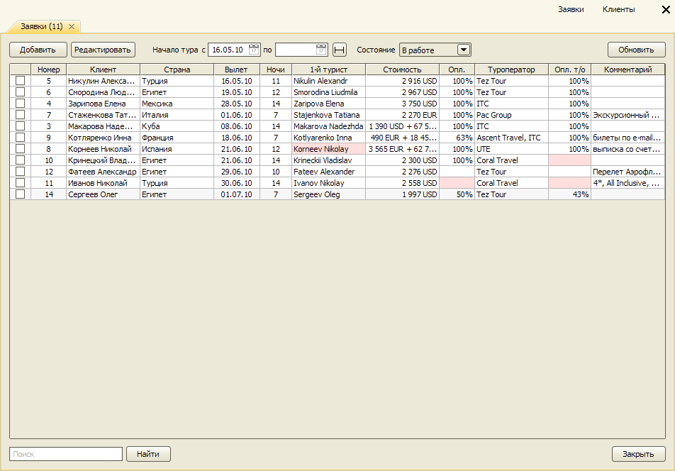
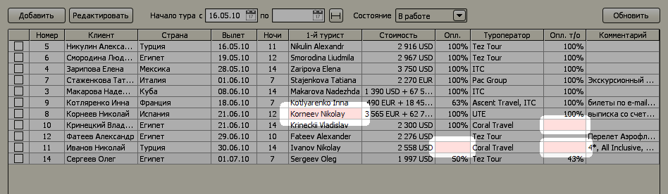
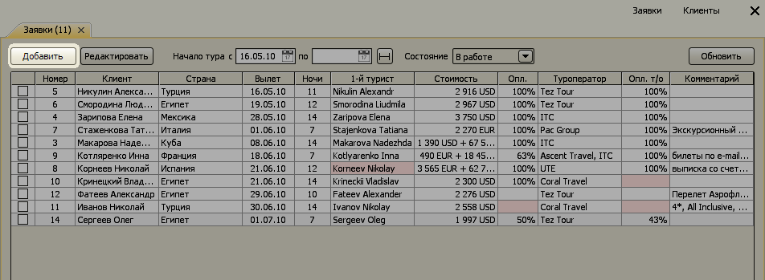
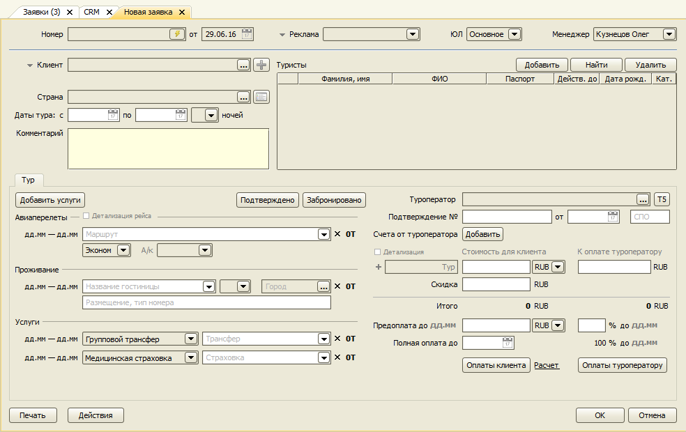
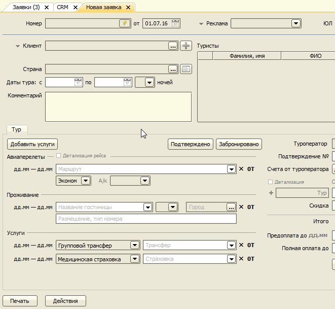
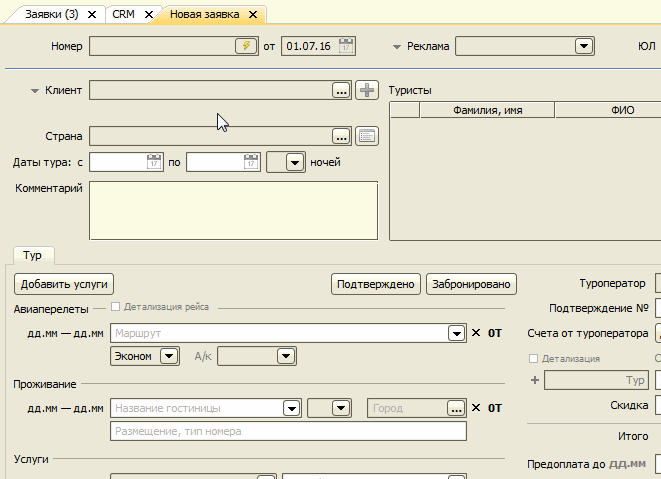
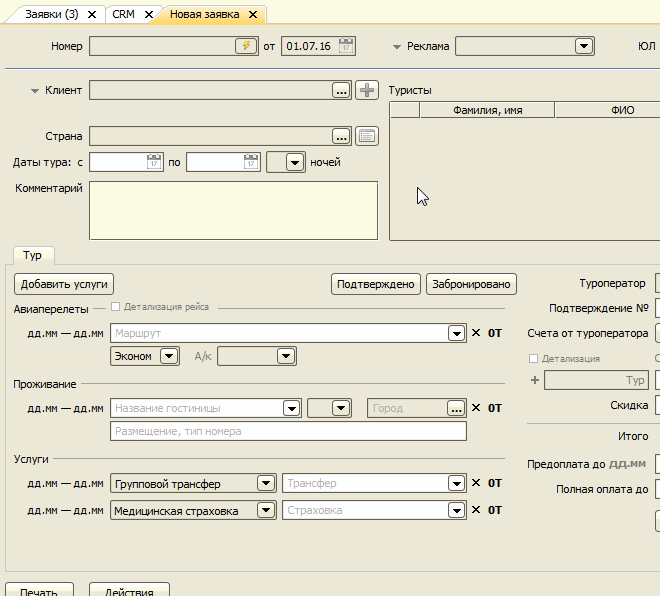
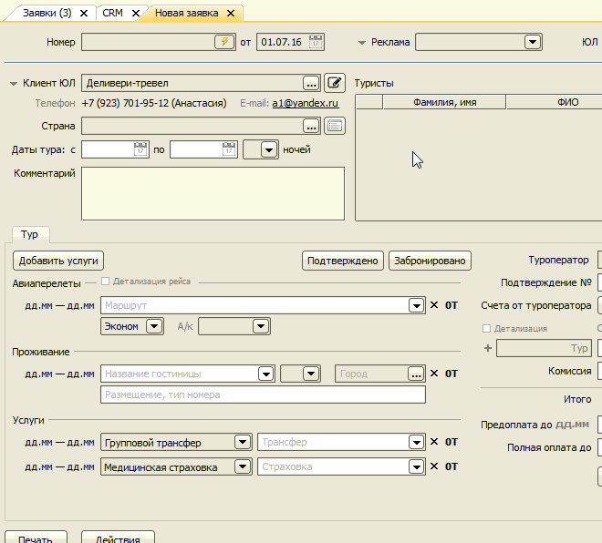

Работа с заявками
Документ "Заявка" является основным документом программы. Он содержит всю информацию о заказанном туре:
- даты тура,
- страну,
- данные туристов,
- услуги, входящие в тур,
- стоимость,
- информацию об оплатах.
В следующих разделах описывается работа с заявками:
- Журнал заявок
- Создание заявки
- Клиент
- Клиент-юрлицо
- Добавление туристов
- Импорт данных туристов
- Изменение данных туристов
- Удаление туристов
- Услуги
- Стоимость тура
- Регистрация оплат клиентов
- Регистрация счетов от туроператоров
- Оплаты туроператорам
- Печать договоров, заявки на бронирование
- Отправка заявки на бронирование по e-mail
- Создание копии заявки
Журнал заявок
Главное меню → Документы → Заявки
Данная форма открывается при запуске программы. В журнале заявок отображается список заказов клиентов.
По умолчанию показываются только текущие заявки (имеющие состояние "В работе").

В таблице отображается следующая информация:
- "Номер" - номер заявки (по умолчанию номера заявкам присваиваются автоматически, начиная с 1);
- "Клиент" - фамилия и имя клиента, заказывающего тур;
- "Страна" - направление тура;
- "Вылет" - дата начала тура;
- "Ночи" - количество ночей;
- "1-й турист" - фамилия и имя первого туриста;
- "Стоимость" - стоимость тура для туриста;
- "Опл." - оплачено клиентом в процентах от стоимости;
- "Туроператор" - туроператор, у которого заказывается тур;
- "Опл. т/о" - оплачено туроператору в процентах от себестоимости;
- "Комментарий" - комментарий к заявке.
В журнале заявок производится цветовая индикация определенных событий, связанных с заявкой:
- за 2 дня до даты предоплаты ячейка "Опл." (оплачено клиентом) подсвечивается желтым цветом, если
не было ни одной оплаты от клиента; - за 1 день до даты предоплаты ячейка "Опл." подсвечивается розовым цветом;
- за 1 день до даты предоплаты ячейка "Опл. т/о" (оплачено туроператору) подсвечивается розовым
цветом при отсутствии оплат туроператору; - за 1 день до сдачи документов на визу туроператору подсвечивается ячейка "1-й турист", если документы
еще не получены от клиента; в последний день сдачи документов на визу туроператору подсвечивается ячейка "1-й турист", если
документы не сданы туроператору.
Создание заявки
Чтобы создать новую заявку нажмите кнопку "Добавить" в журнале заявок:

Откроется форма заявки:

Клиент
Если клиент ранее уже заказывал тур, его можно добавить в заявку, выбрав из справочника.

Если это новый клиент, можно сразу открыть новую карточку кнопкой Плюс. При создании записи для нового клиента, показывается подсказка с результатами поиска совпадения первых букв фамилии.
Клиент-юрлицо
Если клиентом, для которого оформляется заявка, является компания, необходимо переключить тип клиента, и тогда выбор можно производить из справочника "Компании".

Если компания делает заказ в первый раз, можно сразу создать ее карточку, нажав кнопку Плюс.

В любой момент из заявки можно открыть карточку компании одной кнопкой.

Туристы
Услуги
Стоимость туров, оплаты
Печать
Создание копии заявки
Чтобы создать копию текущей заявки, нажмите кнопку "Действия" и в появившемся меню выберите пункт "Создать копию заявки".
В новой заявке будет то же содержимое, что и в исходной, кроме списка туристов.
Остались вопросы? Напишите нам на e-mail